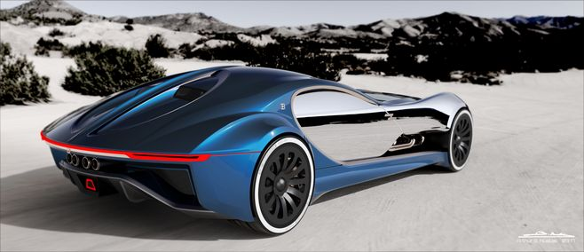

布加迪

不知不觉，布加迪 Chiron
发布至今已有4年了。在这期间，我们看过了许多关于Chiron的视频，除了官方的0到400到0
km/h的破纪录视频之外，我们好像几乎没有看过其它Chiron到达极速的短片。
就在（4月29日），布加迪官方上传了五部全新短片，片名为“Andy Wallace: How to
… Chiron”。这一系列视频是由布加迪 测试车手Andy Wallace
所主演，也就是那位开着Chiron Sport 300+
打破世界纪录的车手。这五部全新短片可分为5个主题，分别是汽车简介，内饰，驾驶模式，弹射起步，以及今天的重点“The
Speed Key”。 从Veyron开始，布加迪
的车主都会有两把钥匙，一把是车钥匙，另一把是在驾驶座旁的 Speed
Key。这把Speed Key
的主要功能是将车子解开封印，进入高速模式。如同视频中，Andy
Wallace讲述了Chiron在插入Speed
Key之后，系统会自动检查车子状况，随着Chiron就可以轻松冲刺到420km/h
的惊人速度。如此高性能的车，当然就是需要有一套系统保护者驾驶者，以免车主不知觉地将车子开到400km/h
的速度。
布加迪 Chiron Super Sport
300+新车此前刚刚以490.5公里/小时的极速刷新了最速量产车的记录，未来预计售价约350万欧元。
设计上，布加迪 Chiron Super Sport 300+相比起普通版的布加迪
Chiron要更加激进和夸张。
更好的空气动力学，巨大的扰流器和圆形排气管，在彰显了它身份的同时，也能真正对性能提升产生帮助。
动力上，其搭载了一台8.0L的涡轮发动机，最大马力超过了1600匹，从排量和马力上看，它是妥妥的顶级性能怪兽。